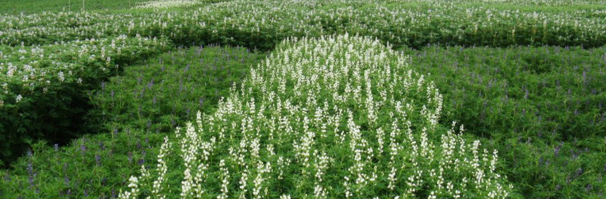

Główną przyczyną degradacji i spadku żyzności gleby jest nieprzestrzeganie płodozmianu. Jest to
szczególnie widoczne w strukturze gospodarstw o ograniczonej powierzchni ziemi, gdzie uprawia się
trzy lub cztery rośliny uprawne, w wyniku czego powstają płodozmiany niewyspecjalizowane o krótkiej
rotacji. W szczególności sytuacja rynkowa ma duży wpływ na budowę płodozmianu w gospodarstwach, co
zmusza rolników do uprawy głównie roślin wysokoenergetycznych, co często prowadzi do zaniedbania
płodozmianu.

Przy zwiększonym nasyceniu struktury zasiewów, np. słonecznik, rzepak, powoduje zmęczenie gleby, co
prowadzi do spadku plonów i jakości produktów roślinnych. Te rośliny rolnicze, wraz z głównymi
produktami handlowymi, mają dużą zawartość składników odżywczych. Stały lub krótkotrwały powrót
uprawy
do płodozmianu powoduje negatywny stan fitosanitarny gruntów.
Generalnie gleba zmęczona to gleba chora, która łatwo poddaje się negatywnym skutkom erozji i traci
jedną z ważnych właściwości - żyzność. W celu osłabienia tego negatywnego efektu do
płodozmianu
wprowadza się tzw. międzyplony – syderaty.
Czym są syderaty?
Nawozy zielone to rośliny uprawiane w okresie, gdy pole jest wolne od uprawy głównej. Celem techniki
rolniczej jest poprawa struktury gleby, zwalczanie chwastów, odbudowa mikroflory i, co
najważniejsze,
wzbogacenie w substancje organiczne.
Główną zaletą uprawy nawozu zielonego jest naturalny proces, który bezpiecznie regeneruje zubożoną
glebę. Uprawy te charakteryzują się szybkim wzrostem masy wegetatywnej, która zacienia powierzchnię
gleby i hamuje wzrost chwastów. Dobrze rozwinięty i silnie rozgałęziony system korzeniowy nawozu
zielonego ma pozytywny wpływ na odbudowę struktury gleby. Na przykład na ciężkich glebach
gliniastych
rozluźniają się i poprawiają napowietrzanie dzięki głębokiej penetracji systemu korzeniowego; na
glebach
lekkich piaszczystych chronią przed erozją wodną i wietrzną.
Czego użyć do siewu zielonego nawozu?
Do siewu nawozu zielonego najczęściej stosuje się rośliny jednoroczne, rzadziej wieloletnie rośliny
strączkowe, które tworzą dużą zieloną masę i mają właściwości fitosanitarne. Szczególną uwagę zwraca
się
na rośliny strączkowe, które mogą wejść w symbiozę z bakteriami brodawkowymi, które zamieniają azot
atmosferyczny w dostępny do wchłaniania przez system korzeniowy.
Zwykle 40-60% azotu zawartego w masie wegetatywnej pozostaje dostępne dla dalszych upraw przy uprawie
zielonego nawozu. Z szybko rosnących, odpornych na zimno zbóż uzyskuje się doskonałe nawozy zielone,
które wydzielają substancje opóźniające kiełkowanie nasion chwastów. Wykorzystywane są również jako
wczesne syderaty z rodziny kapusty i astrów.
Wpływ upraw nawozu zielonego na glebę

Każda uprawa zielonego nawozu ma określone właściwości oddziaływania na glebę.
Uprawa nawozu zielonego zwiększa zawartość potasu w glebie, hamuje chwasty i rozluźnia glebę.
Nawozy zielone z kapusty wzbogacają glebę w fosfor i siarkę, a rośliny strączkowe w
azot i nadają strukturę glebie.
Za najlepszy zielony nawóz do gleby uważa się łubin, rzodkiew oleistą, owies, żyto, facelię i
gorczycę. Wysiewa się je przez cały sezon – przed siewem głównego plonu i po zbiorach.
Facelia i owies wymagają wczesnego siewu - nie boją się mrozów, do ich kiełkowania wystarczy
niewielka temperatura powyżej zera, więc można je wysiewać wiosną. W tym okresie wysiewa się również
rzepak i rzepak jary.
W lecie ten sam zielony nawóz wysiewa się zaraz po zebraniu plonów głównych.
Żyto i gorczycę wysiewa się później - pod koniec lata, na początku jesieni.
Porady agronomów - ekspertów firmy "MAKOSH"
- Nie uprawiaj zielonego nawozu i głównej rośliny tej samej rodziny botanicznej na tym samym
polu.
- Obserwuj płodozmian bez uprawy tego samego zielonego nawozu na tym samym polu rok po roku.
Koś na czas i zbieraj zielony nawóz do ziemi.
- Dla lepszej ochrony gleby przed chwastami lepiej jest wysiewać zielony nawóz metodą siewu
ciągłego niż rzędowym.
- Tak więc syderaty są roślinami pośrednimi, które poprawiają jakość gleby, chronią przed erozją w
czasie wolnym, przed uprawą głównej rośliny i są nasycone składnikami odżywczymi.
Uprawa zielonych roślin nawozowych jest dziś niezbędną techniką przywracania materii organicznej do
gleby. Należy jednak pamiętać, że uprawa nawozu zielonego jest dodatkowym odżywianiem roślin, nie
może
całkowicie zastąpić stosowania nawozów mineralnych.
MAKOSH - Inwestycyjne Odżywianie Roślin! Zwiększamy Twoje plony, a co za tym idzie Twoje dochody.